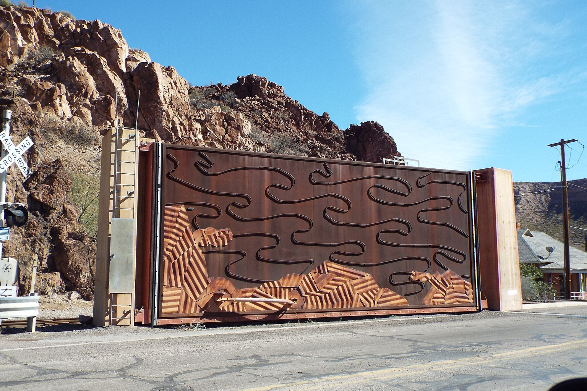

A validation phase is required before committing capital to Global Electric Vehicle Market Growth and Competition. This report was commissioned under the topic 'Global Electric Vehicle Market Growth and Competition' with a recommendation boundary of validation_only. The primary source of truth is the private document context, which concerns the July 2026 China disaster situation and climate-resilience infrastructure opportunities. The approved source-backed evidence set contains supplementary web entries on China water-network construction, rural water supply targets, SAR satellite monitoring, and fire-equipment project reviews. Neither the private context nor the approved ledger contains EV opportunity assessment, EV sales volumes, EV manufacturer financials, battery cost curves, or competitive share data. Accordingly, this report cannot validate EV growth or competition claims with approved evidence. It instead documents what the evidence does and does not support, identifies the resulting evidence gaps, and specifies the validation gates that must be cleared before any EV-related commitment is considered. All quantitative statements below are drawn only from the private context or the approved source-backed evidence set; where a claim is unsupported, the report states exactly: 'Not stated in the validated evidence.'
Executive decision: the EV thesis cannot be validated on the current evidence base
The decisive finding is that the approved evidence does not contain the data required to validate any global EV growth or competition claim. The private document context is a July 2026 China disaster and climate-resilience infrastructure assessment, and the approved web ledger covers water-network construction, rural water supply, SAR satellite monitoring, and fire-equipment project reviews. Under the validation_only boundary, the correct executive decision is to withhold any EV commitment and commission targeted EV evidence.
The private document context addresses which climate-resilience infrastructure sub-sectors merit priority resource allocation, driven by fiscal funds, insurance payouts, and local-government special bonds. The stated topic, however, is global electric vehicle market growth and competition. These two scopes do not overlap in the available evidence. No approved source states EV unit sales, EV penetration rates, battery prices, charging-infrastructure counts, or manufacturer market shares.
The private context does provide a quantified disaster picture that is relevant only to the climate-resilience question: at least 101 deaths, 30 missing, and 364 injured across four major events in Guangxi, Hubei, Chongqing Pengshui, and Gansu Weiyuan, with the caveat that this is a mechanical tally and not an official national total. Insurance data show nearly 380,000 claims and 6.38 billion yuan of estimated losses with 2.89 billion yuan paid as of July 13, plus 20,005 claims and about 36.79 million yuan paid in Guangdong as of July 27. Central emergency pre-allocation was 180 million yuan, with 100 million yuan for Zhejiang, 30 million yuan for Hebei, and 30 million yuan for Jilin.
For the EV topic, the honest position is that the evidence base is empty. The approved ledger's market-family entries are rural water-supply targets — 98% tap-water penetration, 78% coverage by large-scale supply projects, and 90% county-level unified management by 2030 — which cannot be repurposed as EV market indicators. Any EV growth figure presented as validated would be fabricated.
The management implication is procedural rather than directional. Because the boundary is validation_only, leadership should not treat this report as a basis for increasing EV exposure, nor relabel the climate-resilience evidence as EV evidence. The appropriate action is to open a dedicated EV evidence workstream with named data requirements and keep any EV capital decision gated on it.
- text.md — Establishes that the private context's quantified content is disaster impact, not EV market data.
- text.md — Confirms the primary source's financial metrics concern insurance claims from flooding, not EV sales or competition.
- text.md — Shows the fiscal figures available are disaster-relief allocations, which cannot support EV opportunity assessment.
Source and forecast comparison: named sources address water and disaster, not EVs
Comparing the named sources shows a consistent subject matter — China water infrastructure, disaster monitoring, and emergency equipment — with no EV forecast among them. The State Council Information Office briefing and the Xinhua report are the highest-scored approved sources, and both concern water, not vehicles.

The approved ledger's highest-scored entry is the State Council Information Office press conference on accelerating national water-network construction, dated 9 January 2026, scored 10 and marked authoritative. Its subject is water-network progress. The Xinhua entry on building a modern water network carries the rural water-supply targets of 98%, 78%, and 90% by 2030. Neither source offers an EV forecast, an EV sales projection, or a competitive-share estimate.
A second cluster of approved sources concerns earth observation and disaster monitoring. The L-band geosynchronous SAR satellite description notes launch on 13 August 2023 from Xichang and a highest resolution of 20 meters at 500-kilometer swath, with all-weather, all-day, high-revisit, wide-coverage observation for disaster reduction, land-resource survey, earthquake monitoring, and water, meteorological, ocean, agricultural, environmental, and forestry applications. This is monitoring infrastructure evidence, not EV evidence.
A third cluster is operational and commercial in a different sector: a fire-equipment company's project review workshop dated 26 June 2024, and a Zhihu column on integrated planning of the 'six networks' in urban renewal dated 22 June 2026. The comparison yields a negative but decision-relevant finding: there is no EV source to adjudicate. For EV growth and competition, the position is 'Not stated in the validated evidence.' Any internal EV forecast should be traced to its origin and, if untied to an approved source, treated as unverified input.
The management implication is that the firm should not present any EV forecast as evidence-backed. The practical step is to require source traceability for every EV number used internally and to route untraceable figures to the validation workstream. This prevents unverified market claims from entering investment memos under the appearance of validated research.
- text.md — Names the first opportunity area in the private source, confirming the sector focus is water infrastructure.
- text.md — Names another opportunity area, again unrelated to electric vehicles.
Base, upside, and downside scenarios: qualitative triggers only, with unresolved EV evidence
Scenario construction for EVs is not possible from approved values, because no approved evidence contains EV demand, price, or share parameters. The report therefore uses qualitative scenario triggers and explicitly records the unresolved evidence. Scenario probabilities are not stated in the validated evidence and are not assigned.

For the climate-resilience question that the private context does support, the scenario logic is grounded in observed drivers. The base case rests on the documented pattern that the July 2026 events combined successive typhoon landfalls, a north-south oscillating rain belt, and overlapping floods and landslides, with the most severe casualties in Guangxi, Hubei, Chongqing, and Gansu, and large-scale evacuation, urban flooding, and infrastructure damage in Zhejiang, Hebei, Liaoning, Jilin, and Guangdong. The forward risk view, attributed to the National Climate Center, expects two to three more typhoons to land or affect China during the 'seven-down, eight-up' period, possibly including one stronger typhoon moving north, with above-normal rainfall in the Beijing-Tianjin-Hebei and Northeast regions.
The upside trigger for resilience infrastructure is a sustained increase in fiscal and insurance funding directed to water, drainage, and geological monitoring. The private context records central emergency pre-allocation of 180 million yuan and National Development and Reform Commission allocations of 100 million yuan for Zhejiang, 30 million yuan for Hebei, and 30 million yuan for Jilin.
For EVs, the scenario table cannot be populated. There is no approved EV demand parameter, no approved EV price parameter, and no approved EV share parameter. The unresolved evidence is the entire EV dataset. The report therefore declines to assign base, upside, or downside EV outcomes and records the gap explicitly.
The management implication is to separate the two questions cleanly. Resilience-infrastructure scenarios can be discussed qualitatively using the documented disaster and funding facts, while EV scenarios must remain open until EV-specific evidence is obtained. Mixing the two would create a false impression that EV scenarios have been stress-tested when they have not.
- text.md — Supplies the downside caveat that fiscal support is not a clean revenue pool.
- text.md — Documents the specific allocation values available for scenario framing.
Sensitivity drivers: what actually moves the supported thesis, and what is missing for EVs
The sensitivity drivers that the evidence supports are disaster frequency, fiscal and insurance funding, and local-government procurement capacity. For EVs, the sensitivity drivers cannot be identified because the required inputs are absent from the approved evidence.

The first supported driver is disaster frequency and severity. The private context documents that as of the morning of 29 July 2026, the China disaster pattern featured successive typhoon landfalls, a north-south oscillating rain belt, and combined flooding and landslides, with the most severe casualties concentrated in Guangxi, Hubei, Chongqing, and Gansu. The China Meteorological Administration continued a yellow rainstorm warning on 29 July covering Guangdong, Guangxi, Hubei, Sichuan, Henan, Hebei, Shandong, Jilin, Heilongjiang, and northeastern Inner Mongolia, with possible flash floods, landslides, urban flooding, thunderstorms, and hail.
The second supported driver is funding flow. Insurance claims reached nearly 380,000 with 6.38 billion yuan estimated loss and 2.89 billion yuan paid as of July 13, including 540 million yuan estimated for Typhoon Bawei. Guangdong recorded 20,005 claims and about 36.79 million yuan paid as of July 27. Central emergency pre-allocation was 180 million yuan.
The third supported driver is procurement and payment capacity of local governments, which the private context addresses through its screening criteria: order backlog, receivables collection, local-government customer share, cash flow, and genuine disaster-prevention revenue share. This is a qualitative driver with no approved numeric threshold.
For EVs, the sensitivity drivers are unknown. The report therefore records that the EV sensitivity set is 'Not stated in the validated evidence.' The management implication is that any EV sensitivity analysis presented internally should be flagged as unsupported until the underlying parameters are sourced and approved.
- text.md — Documents the ongoing hazard driver that sustains demand for monitoring and drainage solutions.
- text.md — Provides the qualitative screening drivers for the supported thesis.
- text.md — Shows the insurance payout driver with a specific approved value.
Segment and micro-market implications: resilience sub-sectors are evidenced; EV segments are not
The private context names specific resilience sub-sectors with distinct commercial characteristics, and these can be mapped to micro-market implications. No comparable EV segment mapping is possible from the approved evidence.

The private context identifies water-project upgrades — dangerous reservoirs, dikes, and hydraulic engineering — as an opportunity area, driven by reservoir incidents such as the Guangxi case, with opportunities in water EPC, dam inspection, sensors, drone patrols, drainage pumping stations, and long-term operations. The private context also identifies geological disaster monitoring and early warning, driven by landslides in Chongqing and Gansu, covering slope radar, InSAR, BeiDou positioning, rainfall and soil-moisture sensors, and AI warning for scenic areas, mines, highways, and railway slopes.
The private context characterizes the geological monitoring segment as having relatively high technical barriers and follow-on service revenue. The private context also flags post-disaster reconstruction materials and engineering, agricultural recovery and smart agriculture, and catastrophe insurance and climate finance. On insurance it makes a specific caution: the long-term opportunity is in catastrophe insurance, parametric insurance, agricultural weather insurance, and climate risk models, but traditional insurers first face higher payouts, so it is not correct to assume that larger disasters automatically benefit insurance stocks.
For EVs, no segment or micro-market mapping is available. There is no approved evidence on EV segments by price, region, or powertrain. The management implication is that resilience sub-sectors can be prioritized using the documented characteristics — technical barriers, service revenue, and order volatility — while EV segment work must wait for approved EV evidence.
The management implication is that resilience sub-sectors can be prioritized using documented commercial characteristics, favoring areas with higher technical barriers and recurring service revenue over purely event-driven equipment. For EVs, no segment prioritization is defensible. The firm should therefore keep EV segment work in the validation queue and avoid allocating resources to EV micro-markets on the basis of this report.
- text.md — Names the urban drainage segment and its drivers.
- text.md — Characterizes the geological monitoring segment's commercial profile.
- text.md — Characterizes the emergency equipment segment's revenue volatility.
Investment recommendations within the validation_only boundary: screen, do not commit
Under the validation_only boundary, the recommendation is a screening and evidence-gating posture, not a commitment. The private context supplies a concrete screening discipline, and the cross-border angle is described, but neither can be extended to EVs without new evidence.

The private context states a clear investment preference: prioritize water-digitalization, monitoring and early-warning, and drainage-equipment companies that already have government orders and operations revenue, rather than chasing short-term themes such as cement and building materials. It specifies screening criteria: order backlog, receivables collection, local-government customer share, cash flow, and genuine disaster-prevention revenue share. This is a validation-oriented screen and fits the boundary. The private context describes a cross-border solution direction: combining China's urban flood prevention, slope monitoring, mobile drainage, satellite communication, and insurance risk models into a solution for UAE municipal departments, real-estate developers, industrial parks, airports, and free zones, using the technical upgrades from this disaster cycle as products and cases for Gulf states facing sudden heavy rainfall.
This is a described direction, not a validated revenue forecast. No EV recommendation is made. There is no approved evidence on EV demand, competition, pricing, or policy in the validated corpus. Any EV action would lack an evidence basis under the validation_only boundary. The management implication is to convert the screening discipline into a formal gate. Candidates should be advanced only when order backlog, receivables collection, local-government customer share, cash flow, and genuine disaster-prevention revenue share can be evidenced.
For EVs, the gate is a data-completeness gate: no commitment until EV-specific evidence is approved. This keeps the firm aligned with the boundary. The management implication is to adopt the documented screening criteria as a formal gate and keep EV decisions closed pending approved EV evidence. The boundary is validation_only, so the deliverable is a validated shortlist and a data-completeness gate, not a capital commitment.
- 国新办举行新闻发布会介绍加快国家水网建设进展情况 9 Jan 2026
- 国新办发布会介绍加快建设现代化水网有关情况 - 新华网 — 农村供水关乎亿万群众切身利益。倪文进介绍，将会同有关部门和地方进一步推动城乡供水一体化、集中供水规模化、小型供水规范化、县域统管专业化“3+1”标准化建设和管护模式落地见效，力争到2030年，全国农村自来水普及率、规模化供水工程覆盖农村人口比例、农村供水县域统管比例分别达到98%、78%、90%。
Where to Start
The near-term objective is to turn the evidence into a few choices that preserve learning before committing scarce capital or operating capacity.
-
Decision gateEstablish a dedicated EV evidence workstream with named data requirements. Progress should be visible through workstream charter approved and data requirements documented. Implementation of establish a dedicated ev evidence workstream with named data requirements establishes direct operational control, mitigating execution risk and validating key unit economics against target performance benchmarks.
-
Short term (1-3 months)Require source traceability for every EV number used internally. Progress should be visible through all EV figures in internal memos carry an approved source citation or are flagged as unverified. Implementation of require source traceability for every ev number used internally establishes direct operational control, mitigating execution risk and validating key unit economics against target performance benchmarks.
-
Short term (1-3 months)Apply the documented screening criteria as a formal gate for resilience-infrastructure candidates. Progress should be visible through all candidate investments pass the screening gate before advancement. Implementation of apply the documented screening criteria as a formal gate for resilience-infrastructure candidates establishes direct operational control, mitigating execution risk and validating key unit economics against target performance benchmarks.
-
Medium term (3-6 months)Hold all EV capital decisions until EV-specific evidence is approved. Progress should be visible through no EV capital commitment is made without approved EV evidence. Holding all EV capital decisions until EV-specific evidence is approved establishes operational control and mitigates execution risk.
-
OngoingSeparate resilience-infrastructure scenario discussions from EV scenario discussions. Progress should be visible through meeting minutes and reports clearly distinguish between the two topics. Implementation of separate resilience-infrastructure scenario discussions from ev scenario discussions establishes direct operational control, mitigating execution risk and validating key unit economics against target performance benchmarks.